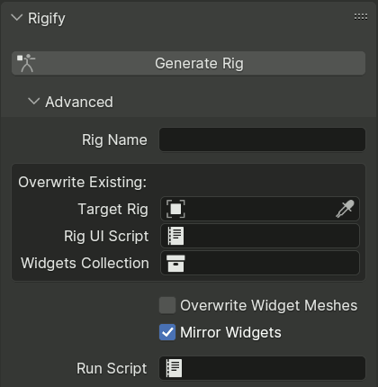

Sử dụng cơ bản¶
Tạo rig cơ bản¶
Thêm một cấu trúc meta-rig từ menu .
Chỉnh sửa vị trí các bone cho khớp với hình học của nhân vật.
Trong phần cài đặt armature, nhấp vào nút Generate Rig để tạo rig.
Thêm Meta-Rig định nghĩa sẵn¶
Tham khảo
- Mode:
Object Mode
- Menu:
- Shortcut:
Shift-A
Rigify lưu trữ toàn bộ thông tin cần thiết để tạo các control và cơ chế rig phức tạp trong những armature đơn giản hơn gọi là "meta-rig".
Các meta-rig định nghĩa sẵn có thể được tìm thấy trong menu Add. Các loại meta-rig hiện có là:
Basic Human (không bao gồm khuôn mặt và ngón tay)
Basic Quadruped
Human
Cat
Wolf
Horse
Shark
Chỉnh sửa vị trí bone¶
Để khớp chính xác với nhân vật, các bone meta-rig phải được di chuyển đến đúng vị trí. Việc này có thể thực hiện theo hai cách: Pose Mode hoặc Edit Mode.
Ghi chú
Rigify coi 1 đơn vị tương ứng với 1 mét. Vì vậy một người cao khoảng 2 đơn vị. Nếu nhân vật của bạn ở tỉ lệ khác và bạn thành thạo modeling hơn là rigging, nên scale nó về kích thước của Rigify trước khi định vị các bone meta-rig. Nếu muốn scale hình học của nhân vật, chúng tôi đề nghị bạn phóng to nhân vật trong Object Mode trước, sau đó áp dụng scale hình học bằng công cụ Apply Scale.
Mẹo căn chỉnh Human của Rigify¶
Limbs: Giữ chân càng thẳng càng tốt ở nhìn từ phía trước (human của Rigify hoạt động tốt hơn trong những trường hợp dễ đoán). Cho gối và khuỷu tay một góc cong nhẹ (Rigify cần biết gối/khuỷu tay của bạn hướng về đâu).
Torso: Giữ spine càng thẳng càng tốt khi nhìn từ phía trước (human của Rigify hoạt động tốt hơn trong những trường hợp dễ đoán). Bone cuối cùng của spine là đầu. Theo mặc định, hai bone tiếp theo (từ trên xuống) được coi là các bone cổ. Nên giữ các bone cổ càng thẳng hàng càng tốt trong lúc chỉnh sửa.
Face: Định vị các bone khuôn mặt có thể khó khăn nếu bạn chưa thành thạo việc chỉnh sửa bone, và chúng gần như vô dụng nếu bạn định làm hoạt hình khuôn mặt qua shape key. Hãy cân nhắc bỏ các đặc điểm khuôn mặt khỏi nhân vật nếu thực sự không cần. Nếu không cần khuôn mặt, toàn bộ bone khuôn mặt có thể bị xóa. Mặc định tất cả bone khuôn mặt nằm trong bone collection Face của armature. Bạn có thể chọn chúng bằng cách chỉ hiển thị collection đó, chọn toàn bộ nội dung của nó rồi xóa các bone trong Edit Mode để gỡ khuôn mặt một cách đúng đắn.
Nếu muốn scale toàn bộ bone khuôn mặt cùng lúc, hãy cân nhắc scale face master bone trong Pose Mode (xem phương pháp khớp bằng Pose Mode). Face master bone được đặt ở cùng vị trí với bone đầu. Để chọn nó dễ dàng, hãy ẩn mọi bone collection khác.
Để có thêm mẹo, xem Positioning Guide.
Khớp bằng Pose Mode (Cơ bản)¶
Vào Pose Mode của meta-rig. Xoay, scale và di chuyển các bone đến đúng vị trí. Khi các bone đã ở đúng vị trí (luôn ở trong Pose Mode), dùng .
Ghi chú
Các bone connected không thể bị di chuyển trong Pose Mode. Bạn có thể scale các bone parent để khớp chiều dài tổng thể, sau đó tinh chỉnh scale của các bone con. Để biết thông tin chi tiết hơn về các chế độ armature, vui lòng tham khảo armatures section.
Khớp bằng Edit Mode (Nâng cao)¶
Nên thực hiện một số cài đặt hiển thị armature cơ bản trước khi vào Edit Mode của bone.
Với meta-rig được chọn, chuyển đến Properties và nhấp vào tab Object. Cuộn xuống panel Display, bật X-ray và trong bộ chọn Maximum Draw Type chọn Wire. Nhờ vậy các bone sẽ luôn được vẽ dạng wireframe đè lên hình học của bạn.
Tiếp theo, vẫn trong Properties, nhấp vào tab Armatures và trong phần Display đánh dấu ô kiểm Axis. Nhờ vậy các trục xoay của bone sẽ được hiển thị trong quá trình chỉnh sửa.
Để biết thông tin chi tiết hơn về các chế độ hiển thị armature, vui lòng tham khảo Display panel page.
Tạo Rig¶
Khi các bone đã ở đúng vị trí, quay lại Object Mode, chuyển đến tab Armature, cuộn xuống đáy và nhấp nút Generate Rig để hoàn tất việc tạo rig. Quá trình tạo sẽ mất từ vài giây đến một phút tùy vào độ phức tạp của rig và cấu hình phần cứng của máy bạn. Nếu rig đã tạo cần tinh chỉnh, bạn có thể chỉnh sửa meta-rig cho phù hợp rồi nhấp lại nút tạo. Nếu rig đã tồn tại, Rigify sẽ đơn giản là ghi đè lên nó mà vẫn giữ lại toàn bộ modifier và constraint của bạn và -- khi có thể -- tất cả các tính năng đã tạo trước đó.
Để biết thông tin về các tùy chọn tạo bổ sung, xem phần Advanced Rig Generation.
Mẹo
Nếu metarig dùng face rig kiểu cũ, bạn có thể dùng nút Upgrade Face Rig xuất hiện phía trên Generate Rig để tự động nâng cấp lên hệ thống khuôn mặt dạng module mới.
Bản nâng cấp sẽ giữ khả năng tương thích với skinning hiện có, nhưng các dáng và animation hiện có nhiều khả năng không tương thích do những thay đổi tinh vi trong hành vi của control.
Ghi chú
Để việc ghi đè rig hoạt động như mong đợi, bạn cần hiển thị cả rig lẫn meta-rig trước khi tạo lại. Rigify sẽ cố bỏ ẩn chúng trong những trường hợp đơn giản, nhưng sẽ hủy việc tạo nếu thất bại.
Cảnh báo
Giống như mọi add-on Python, giao diện Blender không thể cập nhật cho đến khi script Python chạy xong. Hãy đợi cho đến khi rig xuất hiện để xem kết quả.
Cảnh báo
Rigify được thiết kế với giả định về một quy trình làm việc trong đó meta-rig được giữ lại để có thể tạo lại rig chính bất cứ khi nào cần thay đổi nó. Việc xóa meta-rig sau khi đã tạo rig chính, hoặc chỉnh sửa đáng kể rig đã tạo, là không được khuyến nghị: điều đó khiến bạn không thể bổ sung các tính năng mới trong các phiên bản Rigify sau này, hay dễ dàng thích nghi với các thay đổi gây hỏng (breaking change) trong các phiên bản Blender sau này. Nhìn chung, các script cập nhật phiên bản tự động sẽ được cung cấp cho meta-rig khi cần, nhưng không có cho rig đã tạo.
Gắn hình học vào Rig¶
Để gắn hình học vào rig, bạn có thể dùng công cụ ưa thích của mình. Chỉ có vài điều bạn cần biết:
Tất cả bone biến dạng đều nằm trong bone collection DEF.
Các bone Eyes và Teeth của khuôn mặt kiểu cũ không làm biến dạng. Bạn cần gắn hình học mắt và răng thông qua các constraint Child Of.
Thông thường, armature deform với automatic weights cho kết quả rất tốt ngay từ đầu nếu bạn đặt bone đúng chỗ (và có đủ topology để làm việc!).
Để biết thông tin chi tiết hơn về bone collection, modifier Armature và weight painting, hãy tham khảo tài liệu Blender.
Tạo Rig nâng cao¶
Tính năng của các tùy chọn nâng cao¶
Bằng cách dùng các tùy chọn trong panel con Advanced, có thể:
Tạo nhiều hơn một rig cho mỗi scene.
Cập nhật/ghi đè một rig cụ thể.
Buộc ghi đè các object widget đã tạo trước đó.
Chọn việc có dùng linked duplicate cho widget bên trái và bên phải hay không.
Thực thi một data-block script sau khi tạo.
Panel con Advanced Options¶


Các tùy chọn tạo rig nâng cao mặc định bị ẩn trong một panel con. Nhấp vào dòng Advanced để mở nó.
Một số tùy chọn sẽ được Rigify tự động đặt nếu chúng không có giá trị khi rig được tạo, trong khi những tùy chọn khác do người dùng hoàn toàn kiểm soát.
- Rig Name
Khi một rig hoàn toàn mới được tạo (thay vì ghi đè lên rig đã có), giá trị của tùy chọn này được dùng để đặt tên cho nó.
Nếu trường này trống, object mới sẽ được đặt tên dựa trên tên của metarig theo các quy tắc sau:
Nếu tên chứa
META, nó được thay bằngRIG.Nếu tên chứa
metarig, nó được thay bằngrig.Nếu không,
RIG-sẽ được thêm vào trước tên.
Khi ghi đè lên một object rig đã tồn tại được chỉ định bởi tùy chọn Target Rig, tên của nó không bị thay đổi, cho phép bạn tự do đổi tên mà không phải đồng bộ hóa giá trị của tùy chọn này.
- Target Rig auto
Tùy chọn này chỉ định rig đã tạo sẽ bị ghi đè khi tạo lại từ metarig này.
Nếu tùy chọn chưa được đặt, Rigify sẽ tạo một object rig mới và lưu nó vào tùy chọn này.
Ghi chú
Khi tùy chọn chưa được đặt, Rigify sẽ tạo một object rig hoàn toàn mới ngay cả khi đã có object trùng tên.
- Rig UI Script auto
Tùy chọn này chỉ định data block script đã tạo sẽ bị ghi đè khi tạo lại, và hoạt động giống như Target Rig.
Script này điều khiển giao diện trong 3D Viewport, cho phép thuận tiện chuyển đổi các bone collection hiển thị, thay đổi custom property, chuyển đổi giữa IK và FK, v.v.
- Widgets Collection auto
Tham chiếu này chỉ định collection chứa các widget đã tạo, và hoạt động giống như Target Rig.
- Overwrite Widget Meshes
Nếu được bật, Rigify sẽ tạo widget mới mỗi lần rig được tạo lại. Theo mặc định, Rigify cố tái sử dụng các object widget đã tạo có trong widget collection, cho phép chúng được chỉnh sửa thủ công để vừa với nhân vật hơn.
- Mirror Widgets
Khi được bật, Rigify tạo widget cho các bone bên trái và bên phải dưới dạng linked duplicate, dùng scale X âm để lật phiên bản bên phải. Điều này đảm bảo tính đối xứng và giảm số mesh phải chỉnh cho vừa với nhân vật.
Khi tái sử dụng một widget đã tạo, Rigify phát hiện xem nó ban đầu có được tạo ở dạng mirror hay không bằng cách kiểm tra scale của object, để tránh lật các control hiện có. Do đó, việc chuyển sang mirror widget cho một nhân vật đã có đòi hỏi phải xóa các widget bên phải, hoặc dùng Force Widget Update.
- Run Script
Có thể cấu hình Rigify thực thi một script Python chứa trong text data-block sau khi tạo nhằm áp dụng các tùy chỉnh do người dùng định nghĩa. Script được thực thi khi rig đã tạo đang active và được chọn trong Object Mode.
Cách dùng đơn giản nhất của tính năng này là điều chỉnh property của các constraint đã tạo khi các loại rig của Rigify không có cài đặt meta-rig liên quan. Việc đó có thể thực hiện bằng cách dùng tùy chọn menu ngữ cảnh Copy Full Data Path trên property, dán nó vào script và thực hiện một phép gán, ví dụ:
import bpy bpy.data.objects["rig"].pose.bones["MCH-spine.003"].constraints[0].influence = 0.6
Thực hiện những thay đổi như vậy qua script đảm bảo chúng không bị mất nếu rig được tạo lại.
Người dùng quen với Rigify scripting có thể import các module tiện ích của Rigify, và truy cập instance của generator thông qua
rigify.get_generator(). Tuy nhiên, lưu ý rằng vì việc tạo đã kết thúc nên cách dùng duy nhất là đọc dữ liệu được tạo trong quá trình tạo.
Library Linking¶
Khi link một rig vào file khác, thông thường bạn sẽ muốn tạo một collection gồm rig đã tạo và mesh nhân vật. Bạn không cần bao gồm meta-rig hay collection chứa các object widget. Sau đó bạn link collection đó vào và chạy Make Library Override.
Text data-block rig_ui_template.py chịu trách nhiệm cho giao diện rig sẽ được tự động link cùng với rig, bạn không cần link riêng. Tuy nhiên, script sẽ không chạy cho đến khi bạn tự chạy nó từ Text Editor hoặc lưu file và khởi động lại Blender.